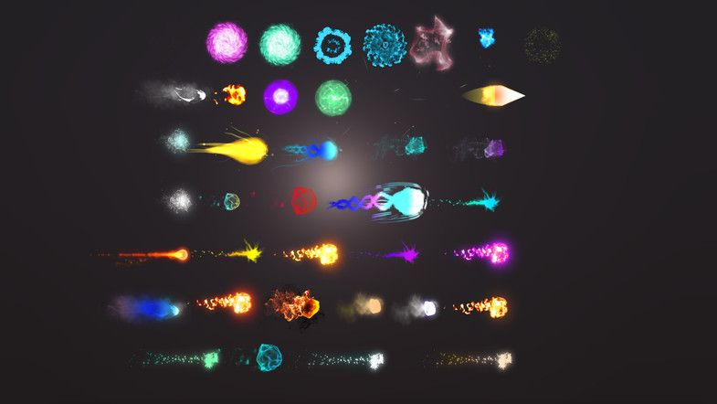

Project Proposal - Group 22
Jad Sobhie, Swann Destouches, Alice Reymond
Project Overview
Title
Our goal is to create a little medieval fantasy magic shop. The player, in first person view, can walk around the shop that displays spells or even potions. The spells are small exhibits of a variety of particle effect systems. The magic items could also be upgraded with implicit surfaces and bloom techniques.
Type of result
Our project will be an interactive scene made on Unity (cf Resources) that the viewer can walk around.
Concept Art
Spells visual effect

Shop design concept
Sketches for the shop's plan
Goals and Deliverables
The main goal of this project is the grasp of particle effect techniques through the implementation of magic effects shown in a magic shop.
The baseline plan would consist on the following:
- a fonctional scene in which it is possible to move around
- Fonctional basic particle effects
- Functional lighting
Optional extensions
In order to give a more diversed scene and add some mechanics, following are some ideas of possible improvements:
- Additionnal and more complex effects (e.g. different types of spells, having torch lighting up around the spell as the camera gets aligned with it)
- Adding glowing potions (bloom effect)
- Shelves of potions that would use the bloom effect and implicit surfaces techniques to give them a bubbly and glowing look.
- Interactive effects on some objects of the scene. An idea in progress is the implementation of Neural Cellular automata
Schedule
- Week 9 : Documentation
- Week 10 : Set up the scene and camera physics
- Week 11 - 12 : Creation of the different particle effects and integration of them into the scene
- Week 13 : Finalization of the different visual aspects of the scene (assets, textures, lighting, etc..)
- Week 14 : Video and report
Resources
We are planning to use the following resources:
- Blender will be used for the creation of the different assets
- Unity will be use for the support of the scene and physics of the camera